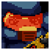

Enter the Gungeon is a bullet hell roguelike dungeon crawler which follows a group known as the Gungeoneers who are on a quest to find the Gungeon's ultimate treasure: the Gun That Can Kill the Past. Players select one of the Gungeoneers and head to a floor where they will shoot, roll, and loot their way through it. The floors are procedurally-generated labyrinths which are comprised of multiple rooms filled with enemies, loot, or npcs and will be different each run. There may also be secret rooms and floors for you to find so be on the lookout for those throughout your run.
Gungeoneers
The Convict
The Convict was originally the head of a criminal organization before she was captured and chose to face the Gungeon over life imprisonment. In game, she starts with a budget revolver, Sawed-Off, Molotov, and Enraging Photo. The budget revolver has a high firing rate but with a magazine of 5, it isn't suited for long engagements. The Sawed-Off is powerful and can kill off enemies on the first floor in a shot or two but only in close quarters. The Molotov is a powerful active that can light an area on fire but is ineffective against flying/immune to fire enemies and it can harm you as well. The Enraging Photo increases the damage she deals when she is hit and also automatically reloads her current gun. Overall, she has the potential to do massive damage with a cost.
The Hunter
The Hunter was from 1,147 years ago and was trapped in a cryo pod when she lost a fight with her target before she escaped. In game, she starts with three items instead of four unlike the other Gungeoneers which is a Rusty Sidearm, Crossbow, and Dog. The Rusty Sidearm deals decent damage but has a magazine of 6 and slower bullets compared to other starting weapons. On the other hand, the Crossbow is powerful and is able to one or two shot a basic enemy while also being good in long ranges and ammo efficient. The Dog is a passive which gives her a 5% chance to dig up an item upon clearing a room and will bark at mimics, alerting you to it. Overall, a very good early game Gungeoneer mainly because of her Crossbow.
The Marine
The Marine was a guard who was stationed at Primerdyne R&D when an experiment gone wrong brought forth an Interdimensional Horror. With his gun jammed, the Marine fled in a escape pod leaving the scientists and other guards to their fate. In game, he starts with a Marine Sidearm, Supply Drop, Military Training, and one armor. The Marine Sidearm is all around a good starting weapon with decent damage, large magazine, high fire rate, high accuracy, and fast reload. The Supply Drop is a one time use item that provides a ammo drop, refilling your current guns ammo to the max. Military Training increases the accuracy of your guns and decreases the reload time. The one armor point increases the Marine's survivability at the beginning. Overall, a very solid straight-forward Gungeoneer although he doesn't provide much utility.
The Pilot
The Pilot was a space smuggler who was caught with unauthorized cargo and asked to surrender. Instead of doing so, he escaped, leaving his friend to be caught. In game, he starts with the Rogue Special, Trusty Lockpicks, Disarming Personality, and Hidden Compartment. The Rogue Special has low damage, high reload, and poor accuracy making it the worst starting gun. The Trusty Lockpicks can be used multiple times on all locked objects except for NPC cells but has a chance to fail, permanently locking you out of the chest or door. Disarming Personality reduces the cost to purchase items at any shop. Hidden Compartment increases the maximum amount of ammo by 10% and adds an extra slot for a active item. Overall, a very luck based Gungeoneer as you would need to find a good gun to replace your starter gun and the lockpicks working.
The Cult of the Gundead

The Cult of the Gundead are the enemies in the Gungeon that aim to stop you from progressing to further floors. They are comprised of multiple types of beings, ranging from literal walking bullets to slimes or some kind of item. As you progress onwards to lower floors, the enemies that appear will change and get stronger with the health multiplier going up. Each floor also has a boss which you must beat before you may proceed to the next floor and are randomly spawned from the few bosses for the floor in the boss room which is marked by a golden bullet door with a skull engraving. Shoot and roll your way through these enemies.
The Guns
Guns are the player primary way of attacking enemies and most are found randomly throughout a run. You may find a gun in a chest or buy one from the shop but it is always randomly generated and there is no run where you would be able to get the same non-starter guns from previous runs. Guns come in five types: Automatic, Semiautomatic, Charged, Beam, and Burst. Automatic guns will continuously fire bullets as long as the fire button is held down and tends to have a large magazine. Semiautomatic guns will also continuously fire when the button is held down but generally has a faster firing rate when the button is continuously pressed instead. Charged guns need the fire button to be held down for a bit before firing. Beam guns are similar to automatic guns but fire out a beam instead of bullets. Burst guns work the same way as automatic and semiautomatic guns but fires out multiple bullets and consumes multiple ammo per shot. All starter guns listed above in Gungeoneers except for the Sawed-Off and Crossbow have infinite ammo. When a gun runs out of ammo, it can be thrown by holding down the fire button to damage enemies. All guns must be reloaded when the magazine is empty and can be refilled with ammo supply drops. There are currently 243 guns in the game in total.